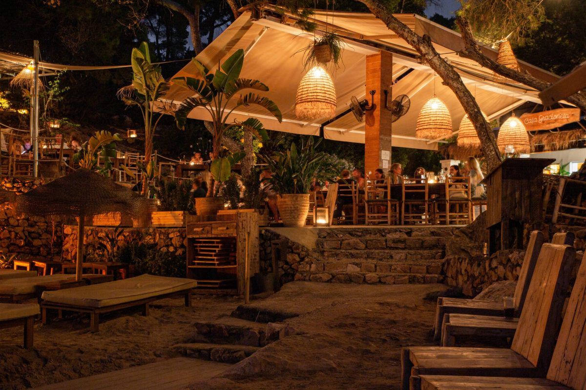
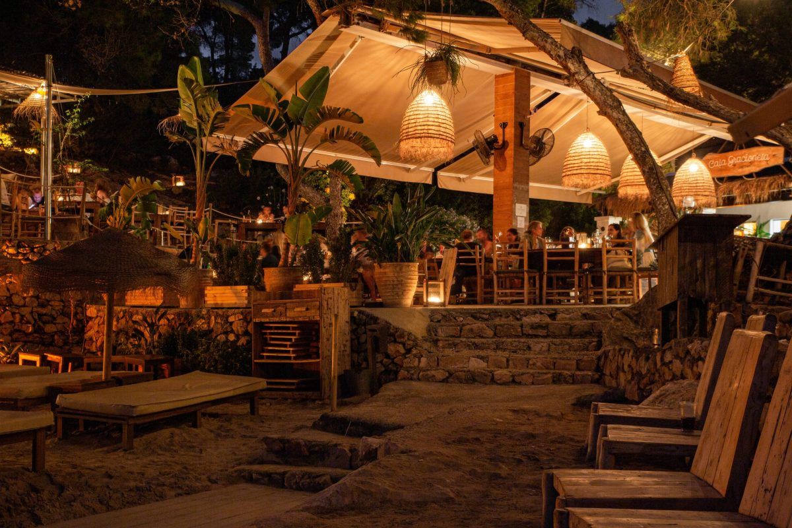

Nos enorgullecemos de ofrecer una experiencia culinaria única que combina lo mejor de dos culturas gastronómicas distintas. Nos abastecemos de ingredientes frescos y de la más alta calidad, provenientes tanto del Mediterráneo como de Japón, para garantizar la autenticidad y el sabor en cada plato que servimos.
Nuestros pescados frescos son cuidadosamente seleccionados de las aguas cristalinas del Mediterráneo, mientras que nuestros ingredientes japoneses son importados localmente desde proveedores confiables que garantizan la calidad y autenticidad de productos como el arroz para sushi, la salsa de soja y las algas nori.
Además, trabajamos en estrecha colaboración con agricultores locales para obtener verduras frescas y de temporada, que añaden un toque mediterráneo vibrante a nuestros platos. Ven y descubre cómo el Mediterráneo y Japón se encuentran en armonía en cada bocado en nuestro restaurante.
Ezra Castellá, oriundo de una pintoresca ciudad mediterránea, se sumergió en el mundo culinario desde joven, influenciado por los aromas de la cocina de su abuela.
Tras años de formación en destacadas escuelas culinarias globales, Ezra refinó su habilidad para combinar sabores y técnicas culinarias diversas. Su trayectoria lo llevó a trabajar en prestigiosos restaurantes en Europa y Asia, donde desarrolló un estilo distintivo que fusiona la tradición mediterránea con la modernidad asiática.
Cada plato de Ezra cuenta una historia, cautivando a los comensales con experiencias gastronómicas únicas y memorables. Hoy en día, Ezra es reconocido como un chef innovador y visionario, cuyo restaurante figura entre los destinos gastronómicos más codiciados del mundo.